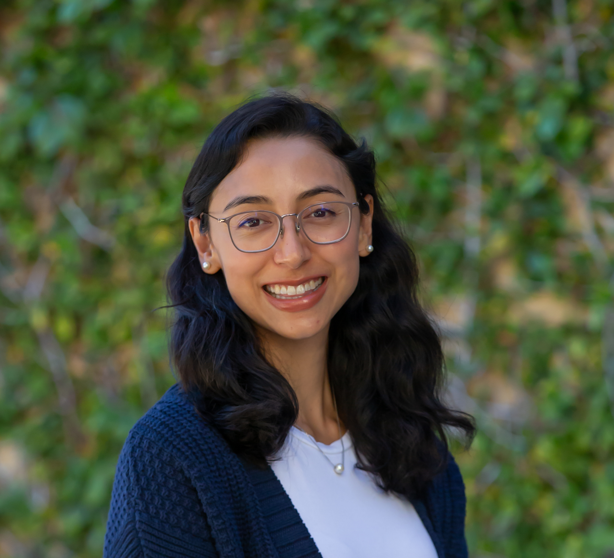

About Me
I am an assistant professor at Georgia Tech in the School of Cybersecurity and Privacy.
I am recruiting PhD students to start in Fall 2027. If you are interested in working with me, please apply to Georgia Tech’s PhD programs in the School of Computer Science or the School of Cybersecurity and Privacy and mention my name in your application.
I work at the intersection of human-computer interaction, computer security, privacy, and AI. I identify security, privacy, and digital safety risks enabled by AI and emerging technologies, and how to make these technologies safer for everyone.
Previously, I was a postdoc at the Max Planck Institute for Security and Privacy (2025-2026) with Yixin Zou and a postdoc in the computer science department at Stanford University (2023-2025) with Zakir Durumeric. At Stanford, I also taught ethics in computer science via the Embedded Ethics program. I completed my PhD in Computational Media at the University of California, Santa Cruz, working with David Lee and was a visiting PhD student at the Max Planck Institute for Software Systems with Elissa Redmiles. I earned a B.S degree in Joint Computer Science and Mathematics from Harvey Mudd College.
Selected Honors and Awards
- CRA Microsoft Trustworthy AI Research Fellowship — 2026
- USENIX Security Distinguished Reviewer — 2025
- Women in AI Ethics (WAIE) Rising Star in AI Ethics - 2024
- UC Santa Cruz ARCS Scholarship - 2021